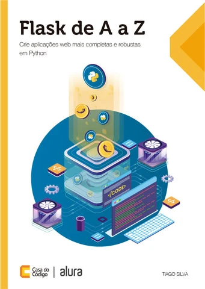
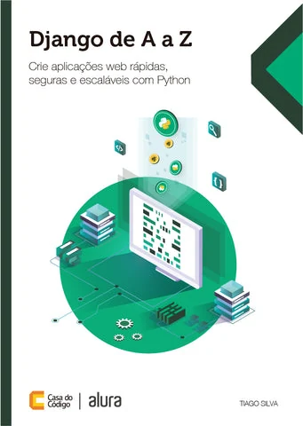

Volume 1
Fundamentos
Do ambiente ao Python do dia a dia: tipos, estruturas de dados, funções, texto, arquivos e biblioteca padrão.
A bíblia do programador Python
Cinco volumes que levam você do primeiro print() à arquitetura: a linguagem, o seu modelo por dentro, engenharia e concorrência, dados e produção e os padrões de projeto. Cada capítulo traz exemplos executáveis, exercícios com testes e números medidos.
A coleção
Cada volume foi escrito para ser lido sozinho. Se você já tem a base, entre direto no volume de que precisa. Se está começando do zero, comece pelo Volume 1.
Volume 1
Do ambiente ao Python do dia a dia: tipos, estruturas de dados, funções, texto, arquivos e biblioteca padrão.
Volume 2
Closures, geradores, o modelo de dados, orientação a objetos avançada e o CPython por dentro.
Volume 3
Projetos, testes, tipagem, SOLID, segurança e performance; threads, processos e asyncio.
Volume 4
Bancos de dados, HTTP, Pandas e Polars, automação web, Docker, filas e pipelines.
Volume 5
Os padrões de projeto clássicos e os do dia a dia, na forma pythônica e com o custo medido.
Trilha de aprendizado
Instalar, programar e entender a memória.
O modelo da linguagem a fundo.
Software que se mantém e faz várias coisas ao mesmo tempo.
Dos dados à produção.
Desenhar código que dura.
Quem já leu
Texto da avaliação.


Cada volume pode ser lido sozinho, mas a ordem foi pensada para ir do básico ao avançado. Comece pelo primeiro e siga até o último.
Ir para a loja